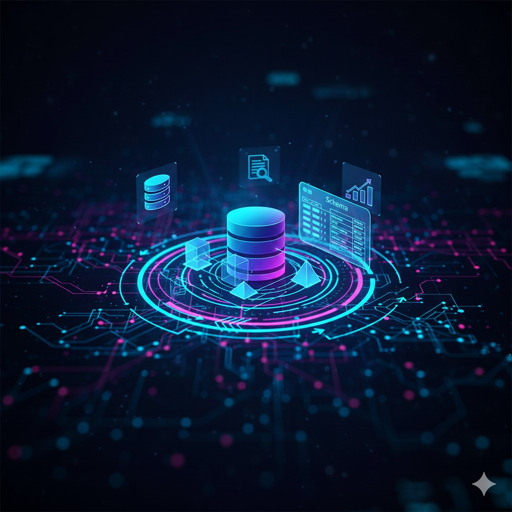
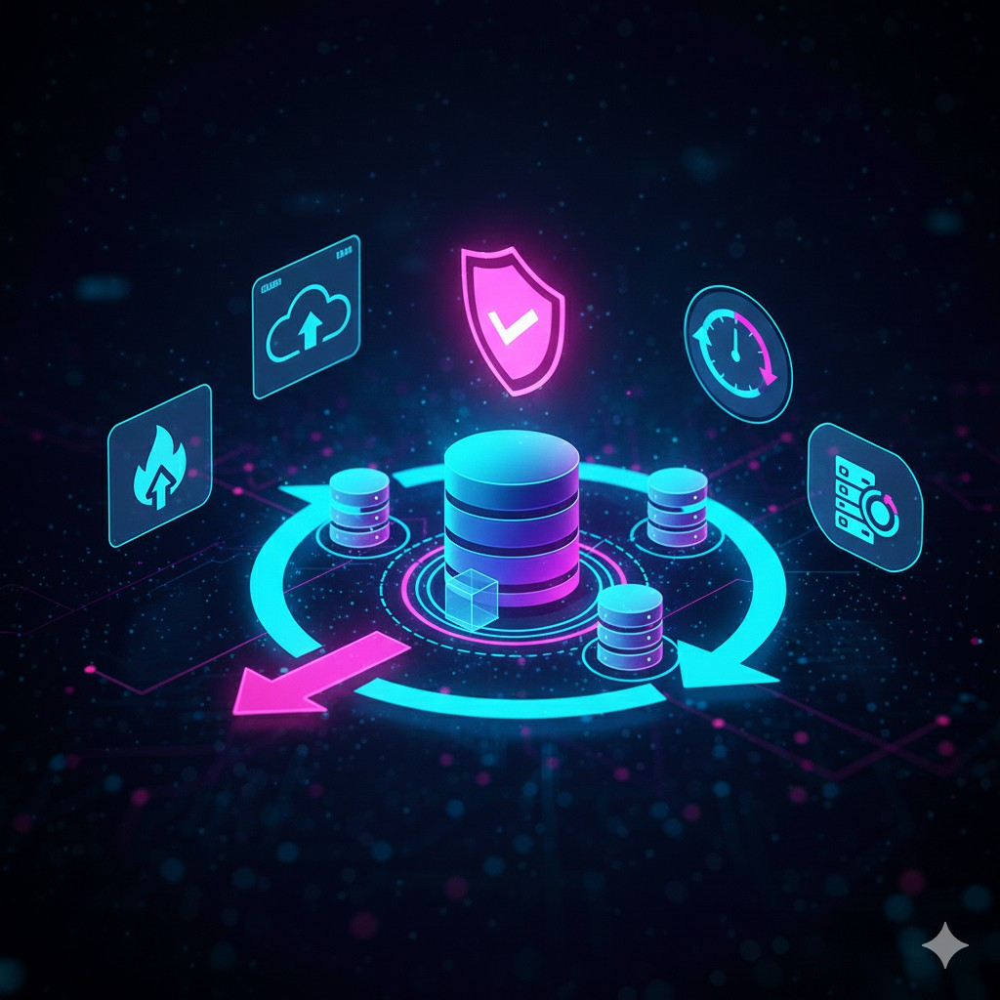
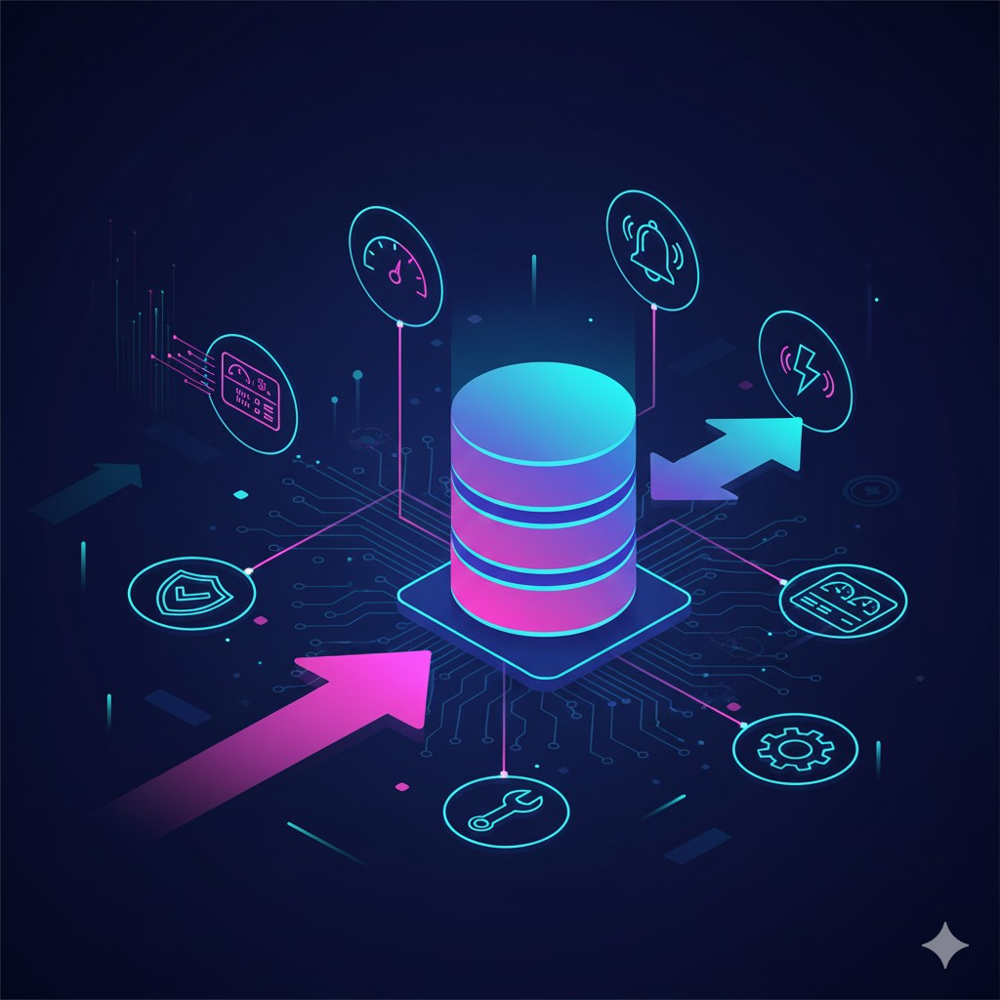
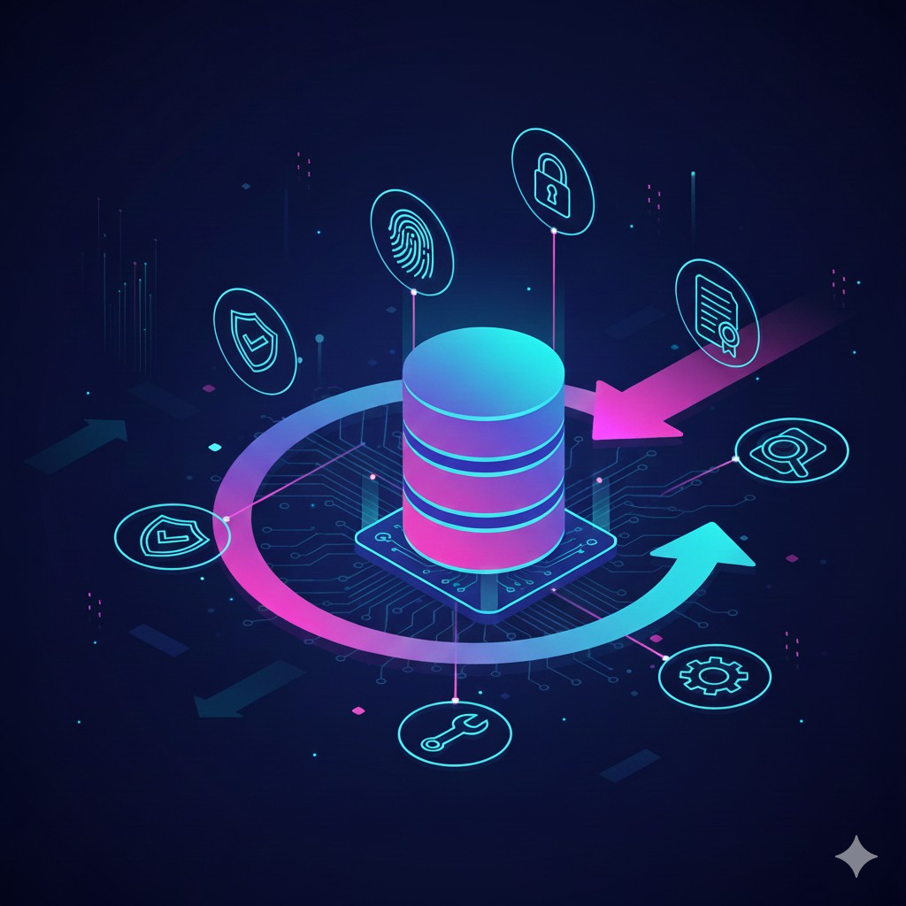

Overview
Strong databases underpin every scalable application. We design transactional and analytical data platforms with a focus on performance, integrity, security and availability.
Our experience includes SQL Server, PostgreSQL, MySQL, Oracle, and modern NoSQL and streaming platforms.
Depth of Database Services

1. Data Model & Schema Design
We design normalized and denormalized schemas based on access patterns and performance goals.
Proper indexing strategies, partitioning, and data distribution plans are part of the design to guarantee predictable queries and reporting.
2. Performance Tuning & Query Optimization
Root-cause analysis of slow queries, index tuning, execution plan reviews and schema refactors to bring down latency and reduce resource usage.
We use profiling tools and synthetic workloads to validate improvements before production rollout.

3. High Availability & Disaster Recovery
Implement Always-On availability groups, clustering, logical replication, read replicas and multi-region failover strategies.
Backup retention, point-in-time recovery and DR runbooks are created and tested to meet RTO/RPO objectives.
4. Database Migration & Modernization
Lift-and-shift or re-architect databases for cloud-native platforms. We help migrate large datasets with minimal downtime and verify application compatibility.
ETL/ELT processes are modernized and data pipelines hardened for reliability.

5. Monitoring, Alerting & Maintenance
Implement end-to-end DB monitoring (query latency, deadlocks, waits), alerting and automated remediation scripts.
Regular maintenance tasks such as index rebuilds, statistics updates and capacity planning are automated.

6. Data Security & Compliance
Role-based access control, data masking, encryption at rest, auditing and database-level firewalling. We help organizations meet compliance needs such as PCI-DSS, GDPR, and other industry regulations.
Typical Stack & Tools
SQL Server, PostgreSQL, MySQL, Oracle, MongoDB, Redis, Kafka/Kinesis for streaming, and monitoring with tools such as Redgate, SolarWinds, Datadog and Prometheus.
Impact
- Lowered average query response time by 60% for many clients.
- Improved availability with multi-region failover and tested DR plans.
- Operational automation reduced daily maintenance overhead by >30%.
Selected Case Study
High-volume Retail DB Optimization: We reduced peak load times by re-architecting indexes, introducing read replicas and introducing query caching — resulting in 40% faster checkout flows and fewer timeouts during sales peaks.
FAQs
How do you approach performance issues?
We begin with reproducible tests, capture execution plans, identify hot spots and then apply short-term fixes and longer-term schema/index changes validated via benchmarks.
Do you support managed DB services?
Yes — we can operate as your managed DB team (SLA-backed) or simply provide advisory and one-off engagements.